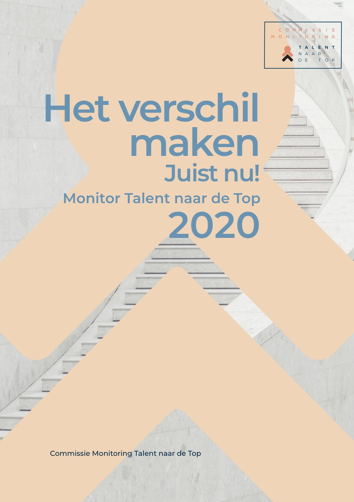
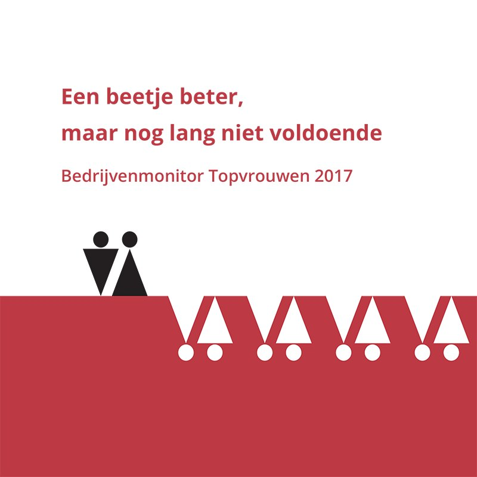
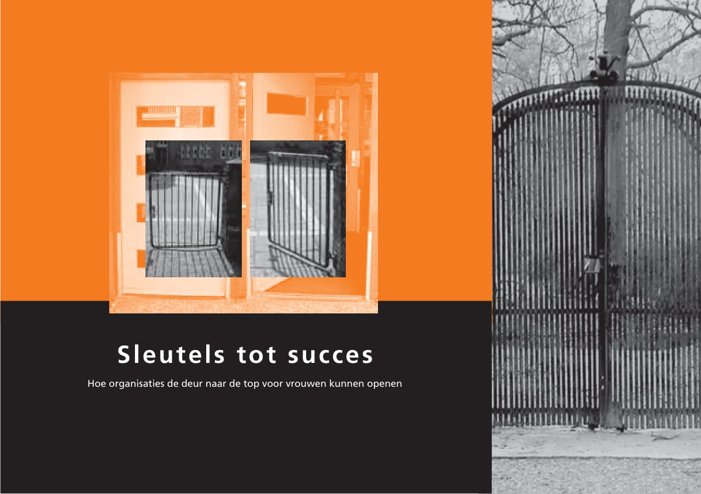
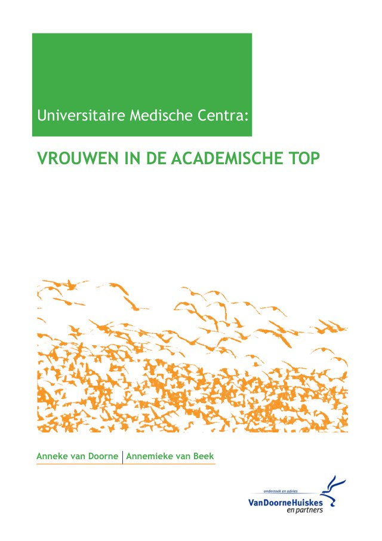
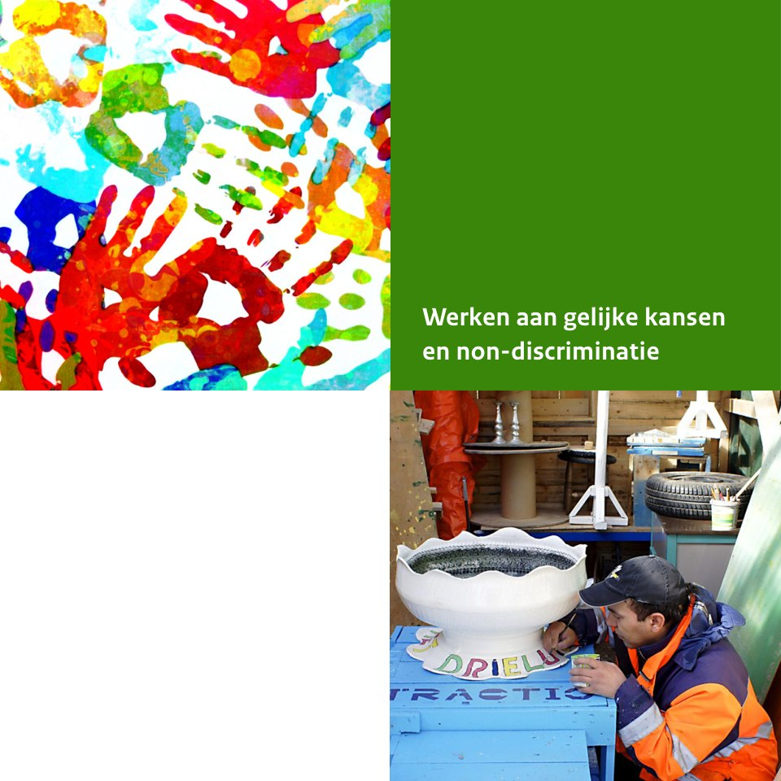
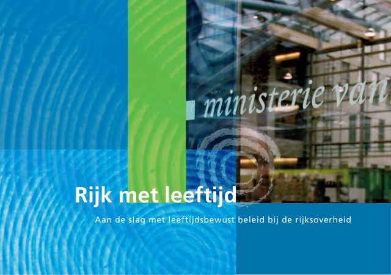
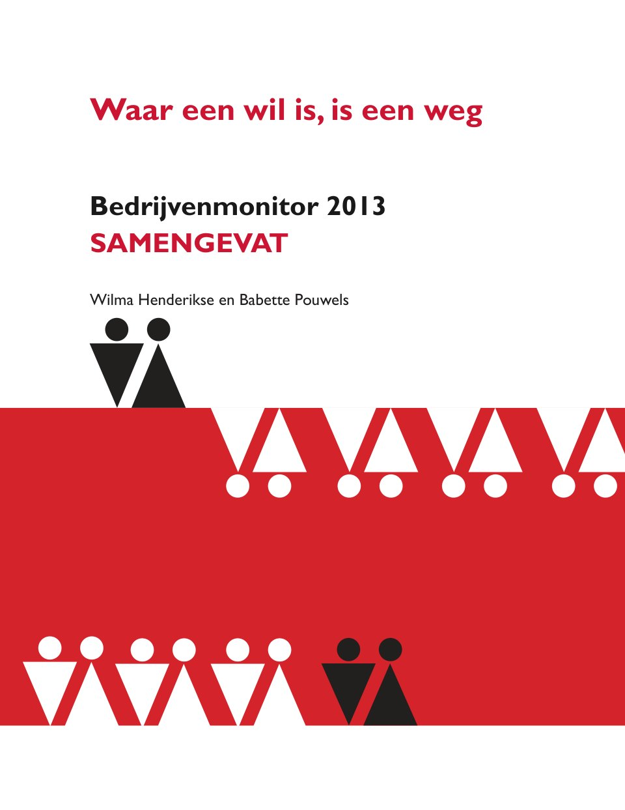
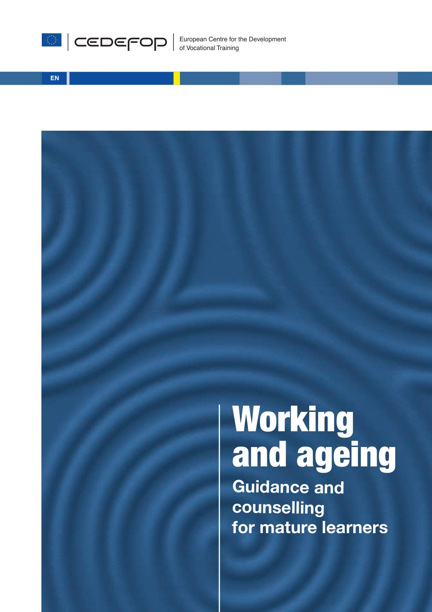

It’s the job that’s never started as takes longest to finish.
J.R.R. Tolkien
Mijn werk
Vraagstukken van sociale gelijkheid en rechtvaardigheid vormen een rode draad in mijn werk. Voorbeelden van publicaties vindt u hier:
 Scherven Brengen Geluk
Scherven Brengen Geluk

Het verschil maken. Juist nu Monitor Talent naar de Top 2020 Benchmark loopbaanontwikkeling vrouwelijk-mannelijk medisch en medisch wetenschappelijk personeel
Benchmark loopbaanontwikkeling vrouwelijk-mannelijk medisch en medisch wetenschappelijk personeel

Een beetje beter maar nog lang niet voldoende, Bedrijvenmonitor 2017 Werkende vaders, strategieën voor vaders die werk en zorg willen combineren
Werkende vaders, strategieën voor vaders die werk en zorg willen combineren

Sleutels tot succes, hoe organisaties de deur naar de top voor vrouwen kunnen openen Over Wilma
Artikel vrouwen in de academische top UMC´s
Werken aan gelijke kansen en non-discriminatie 101 vragen over vrouwen en techniek
101 vragen over vrouwen en techniek
 Over onbenut talent en verloren productiviteit, Monitor LNVH 2017
Over onbenut talent en verloren productiviteit, Monitor LNVH 2017

Rijk met Leeftijd, aan de slag met leeftijdsbewust beleid bij de rijksoverheid
Waar een wil is, is een weg, Bedrijvenmonitor 2013
Working and ageing, Do European employers support longer working lives CedefopOver Wilma
Begon haar loopbaan als wetenschappelijk onderzoeker en hoofd Wetenschapswinkel bij de Erasmus universiteit, om zich vervolgens te specialiseren in marketing en communicatie. Richtte op Curaçao marketingbureau Insight op en stapte in 1993 over naar VanDoorneHuiskes als partner. Vraagstukken van sociale ongelijkheid, gender en diversiteit houden haar al een leven lang bezig. Zij schreef veel publicaties hierover en participeerde in diverse internationale commissies en projecten.
Bestuurlijk actief in sport, onderwijs en hulpverlening, en als vrijwilliger op diverse fronten. Ze werkt met heel veel plezier mee aan natuur- en milieuactiviteiten.

Vragen?
Hier kunt u mij bereiken